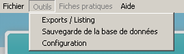

La fonction de sauvegarde de BAYROL Solution permet de conserver les données enregistrées dans un fichier. Ce fichier pourra ensuite servir à restaurer les données en cas de panne du poste informatique, par exemple.

Cette fonction est accessible via le menu principal Outils > Sauvegarde de la base de données .
Cliquer sur le bouton Sauvegarder la base de données dans la boîte de dialogue qui s'affiche. Une fenêtre va s'ouvrir; indiquer le dossier de destination pour le fichier de sauvegarde.
Si besoin, le nom du fichier peut être modifié. Cliquer sur Enregistrer pour terminer.
Une fois que l'enregistrement s'est bien déroulé, un message de succès s'affiche.
La procédure de restauration permet de récupérer l'intégralité des données de la dernière sauvegarde.
Cliquer sur le bouton Restaurer la base de données dans la boîte de dialogue qui s'affiche. Une fenêtre va s'ouvrir; indiquer où se trouve le fichier de sauvegarde. Cliquer sur Ouvrir pour terminer.
Un message d'avertissement va s'afficher; cliquer sur Oui, appliquer la sauvegarde pour procéder à la restauration. Sinon, cliquer sur Non, ne pas appliquer la sauvegarde pour annuler.
Une fois que le processus de restauration est terminé, un message de succès s'affiche.